地政学
ストラスブールはライン川の国境に立ち、フランス国家、ドイツ圏、欧州制度を同時に読む都市です。議会、評議会、裁判所、領事館、国境橋が近く、和解の理念と警備、通勤、外交の日常が同じ地図に現れています。
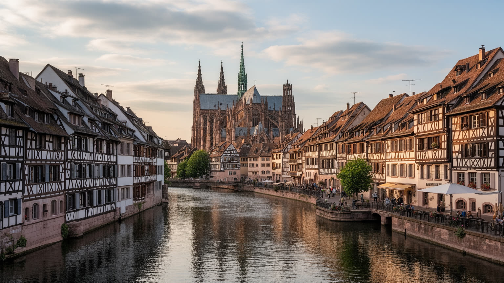
🇫🇷 フランス / ヨーロッパ / World City Atlas
ライン川の国境に立つアルザスの中心都市。大聖堂と運河の旧市街、欧州議会と欧州評議会、大学、トラム、観光、独仏の記憶が日常の街路に重なります。
都市の骨格
ストラスブールはフランス都市でありながら、ライン川の向こうにドイツのケールを持つ国境都市です。旧市街の石造景観と、欧州機関、大学、港、トラム網が近い距離で結びつきます。
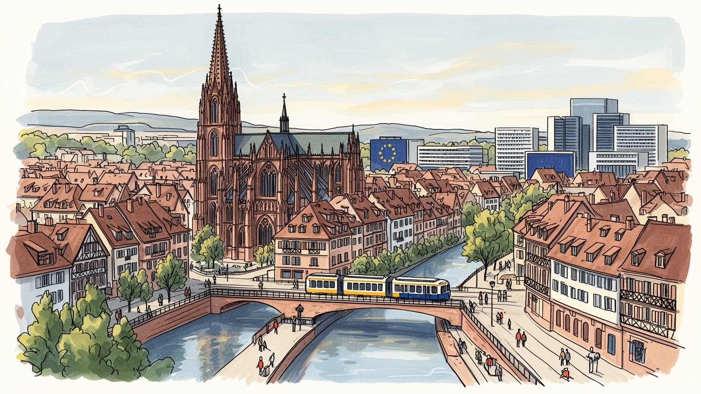
ストラスブールはライン川の国境に立ち、フランス国家、ドイツ圏、欧州制度を同時に読む都市です。議会、評議会、裁判所、領事館、国境橋が近く、和解の理念と警備、通勤、外交の日常が同じ地図に現れています。
欧州機関、大学病院、研究、食品、観光、港湾物流が雇用を作ります。職員、学生、看護師、料理人、清掃、警備、運転士、越境通勤者が都市を支え、制度都市の表面に現場労働の時間が厚く深く重なり続けています。
大聖堂、プロテスタントの記憶、ユダヤ人史、移民の礼拝所、クリスマス市、アルザス料理が生活暦を作ります。独仏の言語と宗教改革の層は、観光名所ではなく住民の名前、食卓、学校にも今も深く確かに残ります。
旧市街と運河は歩きやすく、トラムは郊外と国境を結びます。一方で住民には家賃、学生住宅、観光混雑、洪水と暑さ、季節労働が課題です。名所を守ることと、普段の暮らしを守ることが都市で強く結びついています。
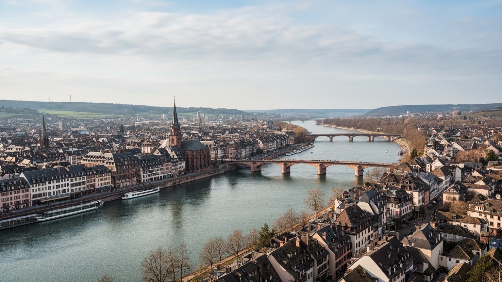
ストラスブールを理解する入口は、ライン川が終点ではなく接続線であることです。旧市街から東へ進むと港湾、欧州地区、国境橋が現れ、ドイツ側のケールへトラムで渡れます。ここでは国境が軍事的な断絶だけでなく、通勤、買い物、通学、医療、文化行事の動線として経験されます。アルザスはフランスとドイツの間で主権が揺れた歴史を持ち、言語、姓、料理、建築、記念碑にその記憶が残ります。ライン川沿いの都市計画は、和解の理念を景観に変える試みでもありますが、国境管理、難民、治安、環境、物流の問題も避けられません。川を渡れる便利さは、異なる制度や物価、労働条件を毎日比べる感覚も生みます。さらに、国境都市であることは周辺の小都市や村との関係を濃くします。仕事はフランス側、買い物はドイツ側、学びは大学、休日は川辺という生活が成立し、行政の線と生活圏の線は一致しません。港湾の貨物、国際会議の車列、越境トラムの乗客を同時に見ると、欧州統合は条約だけでなく移動の習慣として都市に埋め込まれていることが分かります。危機の時にはこの接続性が試されます。感染症、国境警備、エネルギー価格、移民政策が変わると、普段は自然に見える橋と線路が政治的な装置として浮かび上がります。ストラスブールの地政学は抽象的な欧州理念だけではなく、橋を渡る人、倉庫へ向かう貨物、国境公園を歩く家族の移動に宿ります。
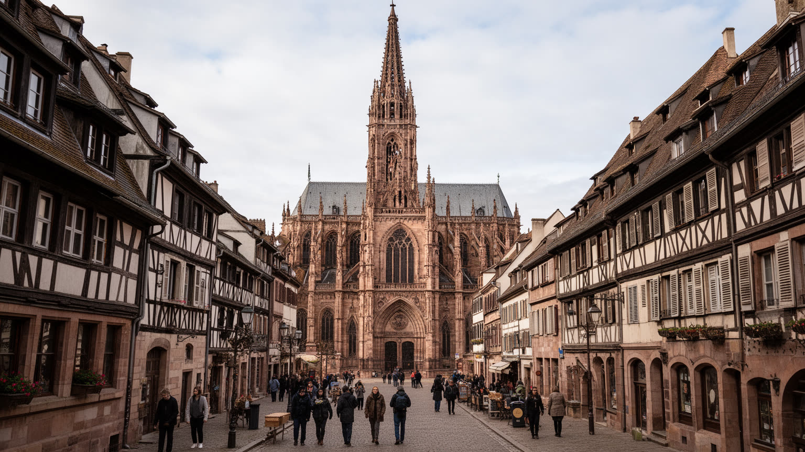
ストラスブール大聖堂は都市の象徴であるだけでなく、旧市街の時間を測る塔です。赤い砂岩の壁、広場、細い路地、木組みの家、イル川の水面は、中世都市、商業都市、宗教都市、観光都市の層を重ねています。大聖堂周辺では、祈り、観光、店の搬入、警備、住民の移動が同じ石畳を使います。世界遺産として保存される景観は、都市の価値を高める一方、修復費、家賃、店舗構成、観光客の動線を細かく管理する必要を生みます。旧市街は凍結された展示物ではありません。学生が自転車で通り、職人が修理し、住民が窓を開け、飲食店が季節の客を迎えることで生きています。朝の市場、昼の観光列、夜の飲食街、日曜の礼拝は、同じ広場に違う時間を重ねます。保存地区では看板、車両、改修素材、窓枠まで気を配るため、日常の小さな変更も公共の議論になります。洪水、火災、石材の劣化、過密な歩行者動線にも備えなければならず、文化財保護は美術史だけの仕事ではありません。観光客の視線が集まる場所ほど、住民のごみ出し、騒音、配達、家賃の問題も濃くなります。夜間照明や広場の催しも、祈りの空間と商業の空間を近づけます。建築を読むときは美しさだけでなく、誰が住み続けられるか、誰の仕事で保存が成り立つかを見る必要があります。大聖堂の高さは、都市の誇りと生活の制約を同時に示します。
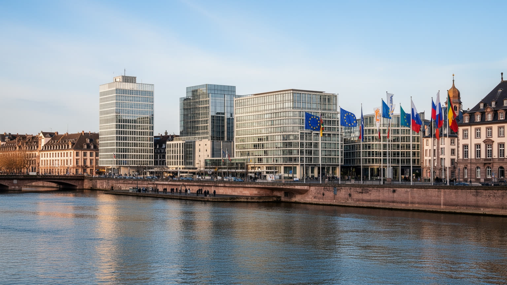
ストラスブールの欧州地区には、欧州議会、欧州評議会、欧州人権裁判所などが集まり、都市を国境を越えた制度の舞台にしています。ここで重要なのは、建物の大きさよりも、戦争後の欧州が和解、人権、議会政治を都市空間に置いたことです。会期中には議員、通訳、記者、警備、清掃、ホテル、飲食、交通が一斉に動き、静かな住宅地にも国際政治のリズムが流れ込みます。欧州機関は雇用と名声をもたらしますが、ブリュッセルとの二重拠点をめぐる議論や、制度が市民から遠く見える問題も抱えます。議場の透明な外観は開かれた政治を象徴しますが、実際の政治を理解するには、通訳ブース、資料作成、抗議活動、警備線、会議後の宿泊需要まで見る必要があります。周辺には公園、学校、集合住宅があり、国際政治は住民の散歩道や通勤路と隣り合います。欧州機関で働く人々は高い専門性を持つ一方、その会議を支えるホテル、印刷、清掃、交通、ケータリングの仕事も都市経済を動かします。欧州人権裁判所の存在は、難民、少数者、表現の自由をめぐる抽象的な議論を、都市の名と結びつけます。議場を訪れる学生や市民団体にとって、この地区は制度を学ぶ教室にもなります。住民にとっては誇りであると同時に、警備、交通、宿泊価格の変動として現れる日常でもあります。ストラスブールは欧州の首都というより、欧州が自分の理念を毎月確かめに来る都市です。
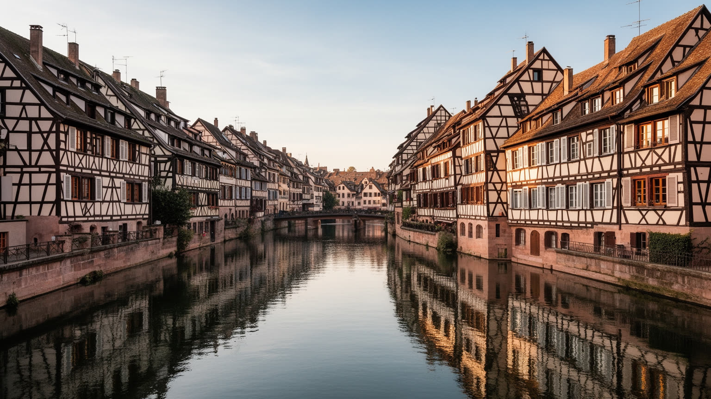
イル川と運河は、ストラスブールの景観を柔らかく見せますが、水辺の都市は常に住宅とリスクの調整を抱えます。プティット・フランスの水門や木組みの家は観光客を引きつけ、写真に残る景色を作ります。その一方で、中心部の人気は家賃を押し上げ、学生、若い家族、低所得の労働者を周辺へ移動させます。郊外の集合住宅地や近隣自治体は、都心の美しいイメージを支える生活圏です。トラムが結ぶ住宅地には、学校、診療所、市場、移民の商店、スポーツ施設があり、観光案内とは違う都市の日常があります。水辺再開発は歩きやすさと緑を増やしますが、浸水、暑さ、維持管理、短期賃貸の影響も考えなければなりません。さらに、大学都市であることは住宅需要を季節ごとに押し上げます。小さな部屋を探す学生、中心に近い職場へ通う看護師や店員、子どもの学校区を気にする家族では、同じ家賃上昇でも受け止め方が違います。水辺の魅力を保つには、公共空間だけでなく、長く住む人の住戸、近所の商店、手頃な賃貸を守る視点が欠かせません。保育園、医療、スーパー、夜の安全な帰宅路が近くにあるかどうかも、住まいの価値を左右します。運河沿いを歩くと、都市の魅力と住宅負担が同じ風景の中にあることが分かります。ストラスブールの住みやすさは、旧市街の美しさだけでなく、中心から少し離れた人々の生活条件で決まります。
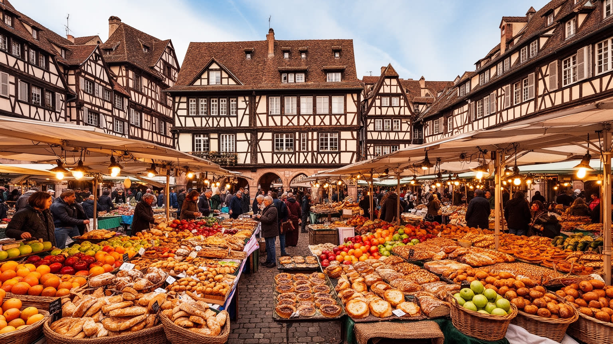
ストラスブールの文化は、フランス都市という枠だけでは足りません。アルザス語の響き、ドイツ風の木組み、ワイン街道、ビール、シュークルート、タルト・フランベ、クリスマス市が、地域の記憶を日常の食と祝祭へ変えています。観光客には絵になる伝統として見えますが、住民にとっては家族の料理、学校で聞いた言葉、冬の市場、近郊の村との関係として残ります。文化は保存されるほど商品にもなり、土産物化や混雑によって生活から離れる危険もあります。だからこそ、伝統を読むときは店先の装飾だけでなく、農家、醸造、パン職人、移民の料理、学生の安い食堂まで見たいところです。大学や劇場、音楽祭、出版、博物館は、地域文化を新しい表現へ開きます。移民の商店や宗教施設も、アルザスの食卓と街路を更新します。地元らしさを一つの色に閉じ込めると、変化する住民の経験が見えなくなります。文化産業を支えるのは、料理人、配達員、清掃、舞台技術者、学生アルバイト、観光案内の人々でもあります。味や祭りの華やかさの背後には、仕込み、翻訳、警備、早朝の市場が続いています。ストラスブールは地域文化を過去に閉じ込めず、大学都市、移民都市、欧州都市として作り替えています。アルザスらしさは固定された民族色ではなく、境界を越えて混ざり続ける生活の技術なのです。
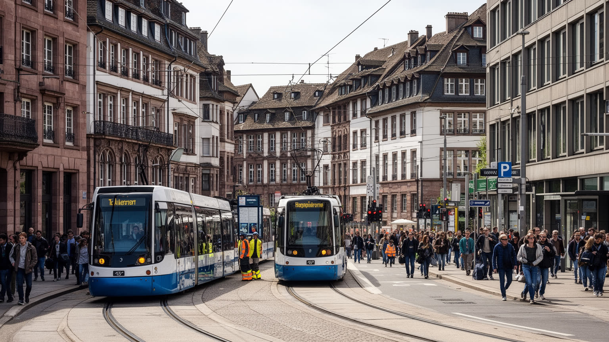
ストラスブールのトラムは、都市の見た目を変えただけでなく、働き方と居住地の関係を作り直しました。中心部の歩行者空間、大学、病院、欧州地区、郊外住宅地、商業地、国境のケールが線路で結ばれ、車に頼らない都市像を示しています。通勤者にとっては、乗り換え、運賃、始発終電、混雑、バリアフリーが生活の条件です。欧州機関や大学で働く専門職だけでなく、清掃、介護、飲食、ホテル、警備、配送、工場、港湾の仕事もこの交通網に支えられます。学生の多さは街に活気を与えますが、住居費と短期雇用の不安も強めます。トラム沿線の再開発は便利さを広げる一方、地価を動かし、古い商店や低所得世帯の居場所を変えることがあります。港や工業地帯、病院の早番、ホテルの夜勤のように、公共交通の時間割と合わない仕事もあります。自転車政策や歩行者空間が評価される都市だからこそ、移動しにくい時間に働く人を見落とせません。さらに越境通勤は、賃金、税、社会保障、言語の違いを日々の選択にします。働く場所が近くても制度が違えば、生活の計算は複雑になります。大学病院や研究施設の勤務も、夜勤、実験、患者対応によって通常の通勤時間から外れます。交通政策は環境政策であり、同時に社会政策です。ストラスブールの労働を読むには、議場や大学の肩書だけでなく、朝夕の停留所に並ぶ人の時間を読む必要があります。
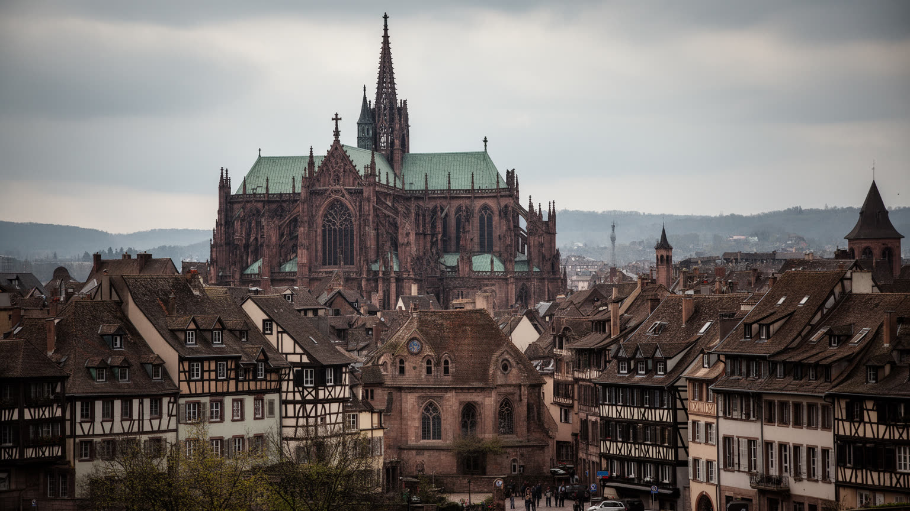
ストラスブールの宗教地図には、カトリック大聖堂だけでなく、プロテスタントの歴史、ユダヤ人コミュニティ、移民の教会やモスク、世俗共和国の制度が重なります。宗教改革の記憶を持つ都市であり、独仏対立とナチ占領の傷を抱える都市でもあります。礼拝所は建築遺産である前に、言語、教育、葬送、福祉、相談の場所です。ユダヤ人迫害や戦争の記憶は、記念碑、学校教育、博物館、家族史を通じて都市に残ります。欧州人権の制度が置かれる都市であることは、この過去と無関係ではありません。信仰と記憶を読むには、観光の大聖堂だけでなく、地域の教会、墓地、学校、移民家庭の祈り、反差別の活動を見る必要があります。アルザスでは宗教と国家の関係にも独自の制度的背景があり、フランス一般の世俗主義だけでは説明しきれない面があります。だから宗教施設は、歴史の展示であると同時に、現在の行政、教育、地域福祉の課題にも関わります。戦争記憶は国境都市で特に複雑です。家族の言語、徴兵、追放、帰属の変更が、記念式典や学校教育の背後に残ります。移民の礼拝所は、新しい住民が孤立せず行政や学校へつながる入口にもなります。多宗教都市であることは、違いが消えるという意味ではありません。食、休日、葬儀、服装、言語をめぐる調整を、日常の尊厳として扱えるかが都市の成熟を決めます。
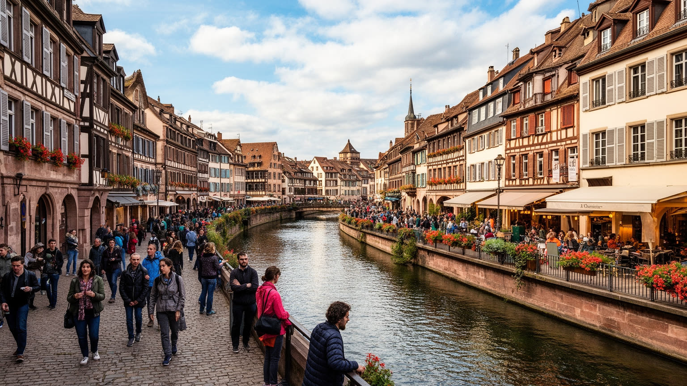
ストラスブール観光は、大聖堂、プティット・フランス、運河クルーズ、クリスマス市、欧州地区を短い距離で巡れる強さを持ちます。冬の市場は都市の名を世界に広げ、宿泊、飲食、小売、交通に大きな収入をもたらします。しかし観光の成功は、住民の通勤、買い物、静けさ、住宅価格を変えます。警備や群衆管理、清掃、仮設店舗、交通規制は季節労働と行政負担を増やし、短期滞在向けの住居は長期居住を圧迫します。観光客が歩く旧市街は、住民の生活路でもあります。名所を守るには、混雑を分散し、地元の店が観光客だけに依存しすぎないようにし、働く人の賃金と休息を考える必要があります。観光案内では見えにくい早朝の納品、夜の片付け、警備の緊張、多言語案内の準備も都市の体験を支えます。季節が終わった後に店と住民がどう暮らすかまで含めて、観光政策は評価されるべきです。近郊の村やワイン産地へ人を流すことは混雑緩和になりますが、移動の環境負荷や地域側の受け入れ力も考える必要があります。住民向けの市場、薬局、学校への道が観光動線に飲み込まれないことも大切です。ストラスブールの魅力は、絵葉書のような景観と欧州政治の象徴性にありますが、その価値は日常生活が残ってこそ持続します。観光は都市を豊かにする力であり、同時に都市を薄くする力にもなります。
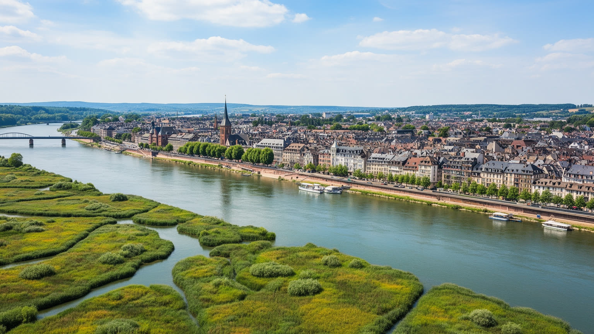
ストラスブールの気候は、海から離れた内陸性の影響を受け、冬の冷え込み、霧、夏の暑さ、雷雨が生活に現れます。ライン川とイル川、運河、地下空間、古い建物は、景観の魅力であると同時に水害と暑熱への備えを必要とします。夏の熱波は石畳、屋根裏住居、観光行列、屋外労働、高齢者の健康に影響し、冬の寒さは住宅の断熱とエネルギー費を問います。川沿いの緑地や街路樹は、散策のためだけでなく都市を冷やすインフラです。洪水や豪雨への備えは、護岸、排水、避難情報、地下駐車場、トラム運行、病院へのアクセスに関わります。中心部の歴史的建物では、景観保存と断熱改修の両立も難題です。冷房を増やすだけでは電力消費と排熱が増え、外で働く人や小さな店には負担が残ります。冬の霧や凍結は自転車、トラム、配送にも影響し、観光都市の安全管理を難しくします。緑地や水辺を増やす政策は、気持ちよさだけでなく健康と防災の政策でもあります。防災情報が旅行者や外国人住民に届くかどうかも、国際都市の実力です。気候変動は新しい問題を突然持ち込むのではなく、既存の住宅格差、観光混雑、交通依存を強めます。ストラスブールが環境都市として評価されるためには、トラムや自転車だけでなく、暑さに弱い人、川沿いに住む人、言語支援が必要な人まで届く適応策が必要です。
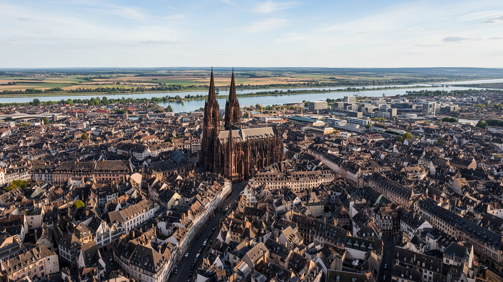
ストラスブールは、巨大な金融都市ではありませんが、世界都市を別の角度から考えさせます。ここでは国境、宗教改革、戦争の記憶、欧州人権、地方文化、大学、観光、トラム、港湾物流が近い距離で重なります。ニューヨークやロンドンのような規模ではなく、制度と生活の接点の濃さが都市の重要性を作ります。欧州議会の議場がある一方で、旧市街の住民は家賃と観光混雑を気にし、学生は住まいを探し、港湾と病院では現場労働が続きます。大聖堂の塔、木組みの家、国境橋、欧州人権裁判所、トラム停留所を一つの地図に置くと、理想と日常の距離が見えます。都市の規模が比較的小さいからこそ、観光、制度、住まい、信仰、移動の影響が互いに近く現れます。欧州の象徴性に頼りすぎると、郊外の住宅、移民の生活、学生の不安定さ、季節労働の疲労は見えにくくなります。国境を越える都市でありながら、実際の生活は家賃、言語、医療、交通、学校のような細部に縛られます。この細部まで見て初めて、欧州都市の意味が立体的になります。ストラスブールを読むことは、欧州統合を記念碑として見るのではなく、戦争後の和解がどのように街路、雇用、住宅、観光、宗教の中で試され続けているかを見ることです。都市の強さは、境界を越える理念を、住む人の生活条件へどこまで下ろせるかにあります。